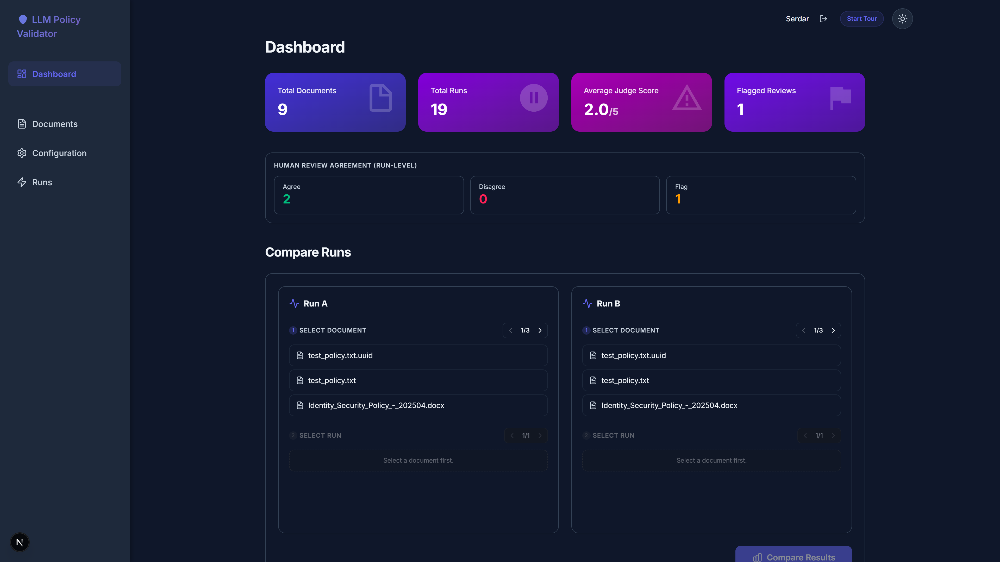
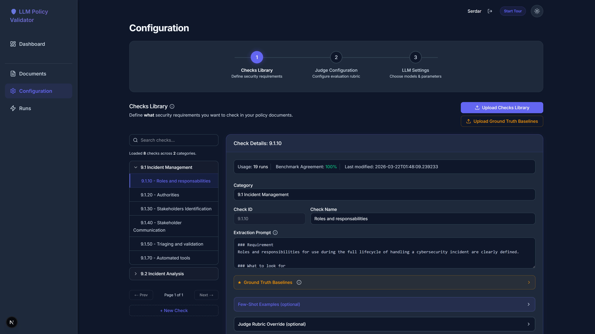

Vraagstelling
Het manueel interpreteren van lange cybersecurity policies kost enorm veel tijd en is foutgevoelig. Organisaties hebben nood aan een traceerbaar systeem dat grote documenten autonoom aftoetst, veilig en zonder overconfidence.
Onderzoek &
Productieproces
Het project zet AI in als een "Judge" (LLM-as-a-Judge). De architectuur extraheert policies, past strikte beoordelingscriteria (rubrics) toe en classificeert de output automatisch met minimale bias.
Besluit en Resultaten
De applicatie toont aan dat LLM's consistent betrouwbare beoordelingen (scores) kunnen faciliteren in vergelijking met menselijke benchmarks, weergegeven in een traceerbare, visueel overzichtelijke interface.
Technologieën



